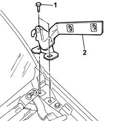

7025A18 l/h or r/h bonnet lid hinge (one) - r+r with lid removed
- Path
- Procedures > 70 FITTINGS > 7025 COMPARTMENT LIDS > 7025A bonnet lid > 7025A18 l/h or r/h bonnet lid hinge (one) - r+r with lid removed
- Kind
- repair procedure (removal / refitting; the operation number is the code)
- Applies to
- all engines; all production periods
- Interactive page
- https://sloeber94.github.io/elrnDB-fPnd/en/#/2753135
Applies to: all engines; all production periods
 Removing
Removing
 Refitting
Refitting5050B34 windscreen wiper arm/s complete with blade - r+r
7210E22 R.R. WINDSCREEN BASE TRIM
1. Undo the retaining bolts.
2. Remove the hinges from the bonnet lid.

Applies to: all engines; all production periods
Refitting
RemovingCheck the condition of the bonnet lid hinges.
Place the bonnet lid hinges in position and screw in the bolts fixing them to the bodyshell without tightening.
With the bonnet lid fitted, adjust the position of the hinges as described in the procedure:
Tighten the bodyshell fixing bolts to the recommended torque.
 | Fastening | Component | Ø | Value (daNm) |
|---|---|---|---|---|
- | Bolt | BONNET LID HINGES | M8 | (Bodyshell side) 2.4 |